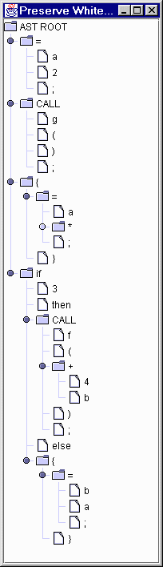

Whitespace is ignored and discarded for most parsing and translation operations, however, what about translations that are only slight perturbations of the input? In other words, all you want to do is change or add a few lines to some input and spit it back formatted just like it was (in contrast to a pretty-printer which totally reformats the input). You're tempted to just use PERL or awk, but you know that regular expressions quickly become insufficient when you need to match context-free structures (vs simple regular structures).
This field guide entry demonstrates how you can preserve whitespace during a nontrivial (i.e., cannot easily be done with awk/sed) translation using ANTLR's token streams.
The complete source code is found in examples/preserveWhiteSpace directory of the ANTLR (2.6.0 and above) distribution.
For debugging reasons or for computing metrics on a running program, you sometimes want to insert instrumentation code that, for example, shouts right before each method call. I have defined a trivial language with assignments, method calls, and if-statements to demonstrate such a translator.
The goal is to have method calls such as "f(arg);" translated to
{dbg.invoke("f", "arg"); f(arg);}
without screwing up the rest of the input. Because method calls can run across multiple lines, line-oriented tools such as awk quickly break down; besides, their regular expressions are not necessarily able to correctly identify method calls in all situations. Here is some sample input:
// start comment
// another comment
a = 2;
g();
{
a=3*4;
}
if 3 then f(4 + b);
else {
b =a; // assign
}
// final
that my translator converts to:
// start comment
// another comment
a = 2;
{dbg.invoke("g", ""); g();}
{
a=3*4;
}
if 3 then {dbg.invoke("f", "4 + b"); f(4 + b);}
else {
b =a; // assign
}
// final
The translator preserves whitespace and comments.
As with most translation problems, you must build a structured intermediate representation of your input that you walk later. In this case, your translator cannot dump instrumentation code and the method calls themselves without going over that section of the input twice, hence, the need for an intermediate representation (note: I'll bet I could get a syntax-directed translator to do this without a tree, but it is easier to do even this translation with a tree). Trees (ASTs) are the easiest structure for most intermediate forms.
The goal is to get a tree filled with not only the regular input tokens, but also the whitespace and comments. To do this, you must
Given such a tree, the tree parser can walk the tree dumping the regular tokens, the whitepace/comments, and the instrumentation.
The lexer for this simple language is little more than an expression evaluator lexer with a few keywords. You will notice that no token definitions are set up to skip by setting the token type to Token.SKIP. All tokens are pushed out of the lexer and the main program will use a TokenStreamHiddenTokenFilter to hide the comments and whitespace from the parser without discarding them.
In order for this particular stream filter to work, you must tell the lexer to generate special tokens rather than the default antlr.CommonToken token:
lexer.setTokenObjectClass("antlr.CommonHiddenStreamToken");
Here is the complete lexer:
class InstrLexer extends Lexer;
options {
charVocabulary = '\3'..'\377';
}
WS : (' '
| '\t'
| ('\n'|'\r'('\n')) {newline();}
)+
;
// Single-line comments
SL_COMMENT
: "//"
(~('\n'|'\r'))* ('\n'|'\r'('\n')?)
{newline();}
;
LBRACE: '{'
;
RBRACE: '}'
;
LPAREN: '('
;
RPAREN: ')'
;
STAR: '*'
;
PLUS: '+'
;
SEMI: ';'
;
ASSIGN
: '='
;
protected
DIGIT
: '0'..'9'
;
INT : (DIGIT)+
;
ID : ('a'..'z')+
;
The parser for this language presents few surprises and builds trees using the '^' operator as in the simple examples provided with ANTLR. The parser is totally ignorant of the fact that hidden tokens have been weaved amongst the real tokens that it parses. All monitored tokens from the input are represented by an AST node in the tree and the method call has an imaginary node, CALL, as it's root. For the input given above, the constructed tree looks like (using antlr.debug.misc.ASTFrame) the following:

The parser needs to copy hidden tokens into the tree nodes for use by the translator. Rather than modify the parser, simply use a new predefined tree node type, CommonASTWithHiddenTokens, whose initialize(Token) method does the work for you. The main program tells the parser to use the new tree node type:
parser.setASTNodeClass("antlr.CommonASTWithHiddenTokens");
The tree node initialization makes a copy of whatever the associated token returns for getHiddenBefore() and getHiddenAfter().
Here is the complete parser:
class InstrParser extends Parser;
options {
buildAST = true;
k=2;
}
tokens {
CALL // define imaginary token CALL
}
slist
: ( stat )+
;
stat: LBRACE^ (stat)+ RBRACE
| "if"^ expr "then" stat ("else" stat)?
| ID ASSIGN^ expr SEMI
| call
;
expr
: mexpr (PLUS^ mexpr)*
;
mexpr
: atom (STAR^ atom)*
;
atom: INT
| ID
;
call: ID LPAREN (expr)? RPAREN SEMI
{#call = #(#[CALL,"CALL"], #call);}
;
Ok, so now you have a tree made from tokens that contains references to the whitespace and comment hidden tokens. How do you spit the tree back out? The first problem is that the structure of the tree is convenient for translation (operators at subtree roots), but is two-dimensional--the order of the input symbols must be reconstructed. For example, "3+4" is a subtree with PLUS at the root and two INT nodes as children. The "3+4" must be reconstructed from the subtree. The second problem relates to getting the whitespace back out in the right order. By convention, always print the node and then the whitespace that was found after it in the input stream. As a special case, you need to handle any hidden tokens that appeared before a monitored token appeared in the input stream. The filter tracks these and slist prints them out before beginning the tree walk. The following support routine will help walk lists of hidden tokens:
/** walk list of hidden tokens in order, printing them out */
public static void dumpHidden(antlr.CommonHiddenStreamToken t) {
for ( ; t!=null ; t=InstrMain.filter.getHiddenAfter(t) ) {
System.out.print(t.getText());
}
}
The tree parser is fairly straightforward except for the extra rule callDumpInstrumentation. Think again about the translation. Certainly, the parser must invoke rule call so that the method call can be dumped back out. To get the information out of a method call AST to generate the instrumentation, why not walk the same subtree? Because the parser will invoke rule call and not the second version (rule callDumpInstrumentation), you must invoke it explicitly (invoke it first so the instrumentation comes out before the normal method call). Invoking a rule from an action is easy, just call it like any other method with the subtree to walk as the first argument:
callDumpInstrumentation(#call);
Here is the complete tree parser:
class InstrTreeWalker extends TreeParser;
{
/** walk list of hidden tokens in order, printing them out */
public static void dumpHidden(antlr.CommonHiddenStreamToken t) {
for ( ; t!=null ; t=InstrMain.filter.getHiddenAfter(t) ) {
System.out.print(t.getText());
}
}
private void pr(AST p) {
System.out.print(p.getText());
dumpHidden(
((antlr.CommonASTWithHiddenTokens)p).getHiddenAfter()
);
}
}
slist
: {dumpHidden(InstrMain.filter.getInitialHiddenToken());}
(stat)+
;
stat: #(LBRACE {pr(#LBRACE);} (stat)+ RBRACE {pr(#RBRACE);})
| #(i:"if" {pr(i);} expr t:"then" {pr(t);} stat
(e:"else" {pr(e);} stat)?)
| #(ASSIGN ID {pr(#ID); pr(#ASSIGN);} expr SEMI {pr(#SEMI);} )
| call
;
expr
: #(PLUS expr {pr(#PLUS);} expr)
| #(STAR expr {pr(#STAR);} expr)
| INT {pr(#INT);}
| ID {pr(#ID);}
;
call: {
// add instrumentation about call; manually call rule
callDumpInstrumentation(#call);
}
#(CALL ID {pr(#ID);}
LPAREN {pr(#LPAREN);} (expr)? RPAREN {pr(#RPAREN);}
SEMI
{
// print SEMI manually; need '}' between it and whitespace
System.out.print(#SEMI.getText());
System.out.print("}"); // close {...} of instrumentation
dumpHidden(
((antlr.CommonASTWithHiddenTokens)#SEMI).getHiddenAfter()
);
}
)
;
/** Dump instrumentation for a call statement.
* The reference to rule expr prints out the arg
* and then at the end of this rule, we close the
* generated called to dbg.invoke().
*/
callDumpInstrumentation
: #(CALL id:ID
{System.out.print("{dbg.invoke(\""+id.getText()+"\", \"");}
LPAREN (e:expr)? RPAREN SEMI
{System.out.print("\"); ");}
)
;
The main program's job is to create a lexer, a token channel filter, a parser, and a tree parser and hook them together. The program also has to get the lexer to create special tokens and special trees as described above. Notice that the parser has no idea that it is parsing a filtered channel and the tree parser has no idea that it is parsing a tree annotated with whitespace and comments.
Here is the main program:
import java.io.*;
import antlr.*;
import antlr.collections.*;
import antlr.debug.misc.*;
class InstrMain {
/** Parser will query filter for information */
public static TokenStreamHiddenTokenFilter filter;
public static void main(String[] args) {
// create the lexer
InstrLexer lexer = new InstrLexer(new DataInputStream(System.in));
// use the special token objects
lexer.setTokenObjectClass("antlr.CommonHiddenStreamToken");
// create the stream filter; hide WS and SL_COMMENT
filter = new TokenStreamHiddenTokenFilter(lexer);
filter.hide(InstrParser.WS);
filter.hide(InstrParser.SL_COMMENT);
// create the parser
InstrParser parser = new InstrParser(filter);
// create trees that copy hidden tokens into tree also
parser.setASTNodeClass("antlr.CommonASTWithHiddenTokens");
try {
// Parse the input statements
parser.slist();
}
catch (IOException io) {
System.err.println("IOException while parsing");
}
catch(ParserException e) {
System.err.println("exception: "+e);
}
CommonASTWithHiddenTokens t =
(CommonASTWithHiddenTokens)parser.getAST();
/* UNCOMMENT THIS TO SEE THE TREE STRUCTURE
ASTFactory factory = new ASTFactory();
AST r = factory.create(0,"AST ROOT");
r.setFirstChild(t);
ASTFrame frame =
new ASTFrame("Preserve Whitespace Example AST", r);
frame.setVisible(true);
*/
// create the tree parser
InstrTreeWalker walker = new InstrTreeWalker();
try {
walker.slist(t);
}
catch(ParserException e) {
System.err.println("exception: "+e);
}
}
}